Robotic Mitosis: Engineering Self-Reproduction from 2D Lattices into 3D Morphogenetic Structures

Self-reproduction is a defining property of biological life and a long-standing milestone for autonomous robotic systems. Despite advances in self-reconfiguration and algorithmic replication, no physical robot has demonstrated embodied self-reproduction capable of reversible shape transformation and structural variation. Here, we introduce a modular robotic architecture that reproduces through a geometry-guided 2D–3D–2D morphological cycle. Identical triangular modules autonomously attach, fold, and reorganize using magnetic coupling, allowing a "mother" robot to absorb free modules, increase its mass, and generate a physically detached offspring.
We show that this mechanism enables reproduction across multiple scales: a minimal 2-module body reproduces with a 33% success rate in 4-module system, whereas 6-module and 8-module worms achieve 100% reproducibility across all trials. The system exhibits early signatures of differentiation, where structurally identical offspring diverge into distinct post-division states due to pathway-dependent morphological transitions.
These results demonstrate that a small set of geometric, mechanical, and dynamical principles is sufficient to instantiate physical self-reproduction in a modular robot. By grounding replication in embodied interactions rather than symbolic instruction, this work provides a foundation for scalable, evolution-capable robotic lineages.
Robotic systems have demonstrated remarkable capabilities across structured environments, yet achieving long-term operation in remote, harsh, or unpredictable settings remains an open challenge. Space exploration, deep-sea inspection, and disaster-response missions expose robots to conditions that are difficult to predict, maintain, or repair (Fig. 1). Over time, these environments can induce mechanical degradation, component failure, and mission interruption.

The concept of machines capable of growth and self-repair dates back to the foundational theory of self-reproducing automata by von Neumann. However, traditional engineering approaches still rely largely on stronger materials, redundancy, and fault-tolerant control. These strategies do not address a fundamental limitation: once deployed, most engineered systems remain static. They cannot expand, repair structural damage, or generate new functional units to sustain operation in dynamic environments. In contrast, biological systems achieve long-term persistence through processes of growth, regeneration, and self-reproduction.
To situate the concept of robotic self-reproduction more precisely, we highlight three established categories of morphological autonomy: self-reconfiguration, self-replication, and self-reproduction.
| Self-Reconfigurable Robot | Self-Replicating Robot | Self-Reproducing Robot | |
|---|---|---|---|
| Core capability | Change its own shape. | Build an identical copy. | Build a new unit from a copied mother robot. |
| Resulting configuration | Single robot with a new form. | Two or more identical robots. | Two or more new robots, with the potential for one to be a variant. |
| Evolutionary implication | One robot adapting. | Just cloning. | Evolution between copies. |
Biological cell division provides a powerful model for the highest level of autonomy. As shown in Fig. 2, a cell absorbs external resources, increases its mass, and divides into offspring that may inherit or develop new characteristics. Inspired by this principle, researchers have sought to bridge the gap between biological and mechanical reproduction.
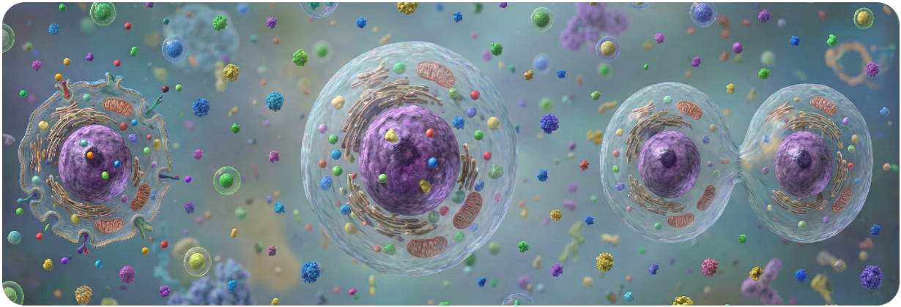
In this work, we introduce a planar-to-spatial self-reproducing robot composed of triangular lattice modules; each module consists of two triangle pieces connected via hinge joints. Building upon methods for self-folding machines and programmable matter, our architecture enables reversible transformation between compact 2D configurations and functional 3D bodies (Fig. 3). The mechanism supports modular absorption, structural expansion, and the assembly of a new, physically detached copy, representing a step toward embodied, evolution-capable robotic systems.

The computational design process began with the identification of key hardware elements required to support self-reproduction. Spherical magnets were selected as the primary coupling mechanism between modules due to their self-aligning behavior, omnidirectional connectivity, and sufficient holding force.
Since the intended inter-module motion is primarily revolute, each module was constructed from two rigid pieces. Ensuring compactness while maintaining structural integrity required careful selection of the polygonal geometry for each piece. We adopted an equilateral triangular shape with an edge length of 150 mm (Fig. 4), motivated by both geometric versatility and mechanical stability.
Triangles form the fundamental primitive of surface representation in computer graphics and computational geometry. As the simplest non-degenerate polygon, they remain planar under all transformations and can approximate arbitrary curved surfaces without distortion. From a structural standpoint, the triangle is the only inherently rigid polygon—unlike quadrilaterals or higher-order shapes, which deform unless constrained.
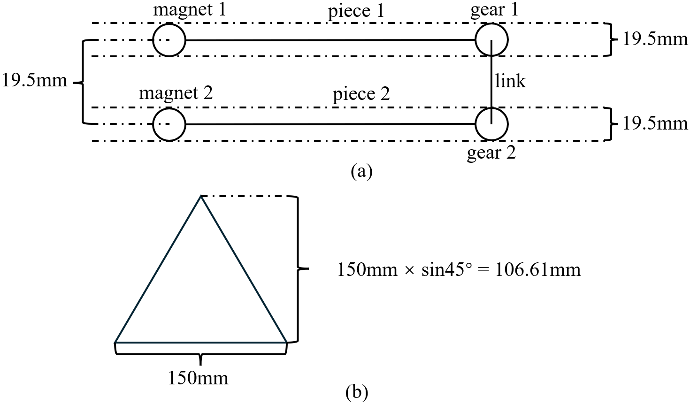
To determine the torque requirements at each revolute joint, the magnetic interaction force between two dipoles separated by distance r was modeled. At r = 19.5 mm, the required torque was estimated as τtotal ≈ 13.7 kg·cm (no payload) and τtotal ≈ 24.3 kg·cm (with 1 kg payload), as shown in Fig. 5.
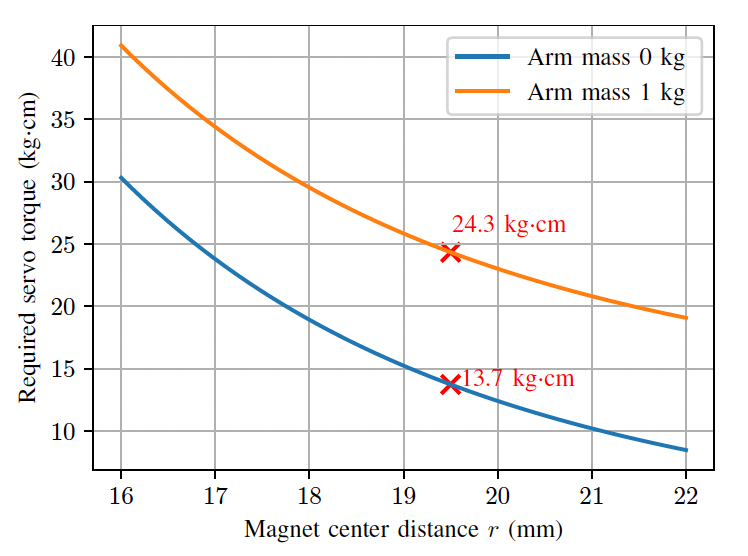
These calculations guided the actuator selection. A 22 kg·cm servo motor (Fig. 6) was chosen to provide an adequate safety margin. The Arduino Nano ESP32 (Fig. 7) was selected for its communication flexibility, onboard computation, and compatibility with peripheral devices. Each module also incorporates a custom 7.4V battery and power management circuitry for autonomous operation.
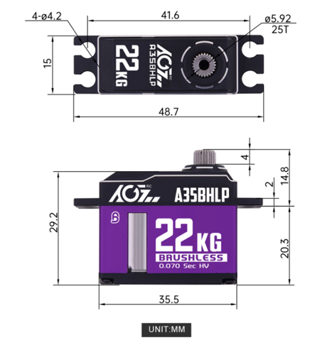
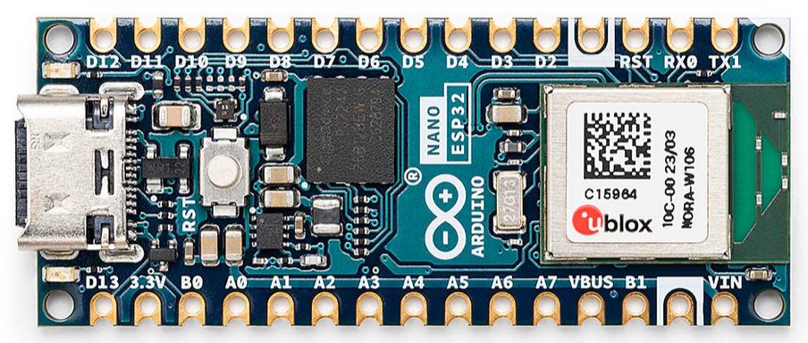
The module design progressed through five iterations (Fig. 8). Version 1 established the initial concept; Version 2 optimized magnet placement; Version 3 refined internal electronics and gear layout; Version 4 improved servo integration; and Version 5 consolidated all refinements into a compact, robust form. The final design (Fig. 9) served as the basis for subsequent fabrication and experimental validation.
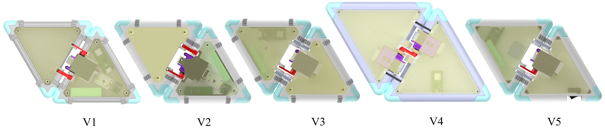
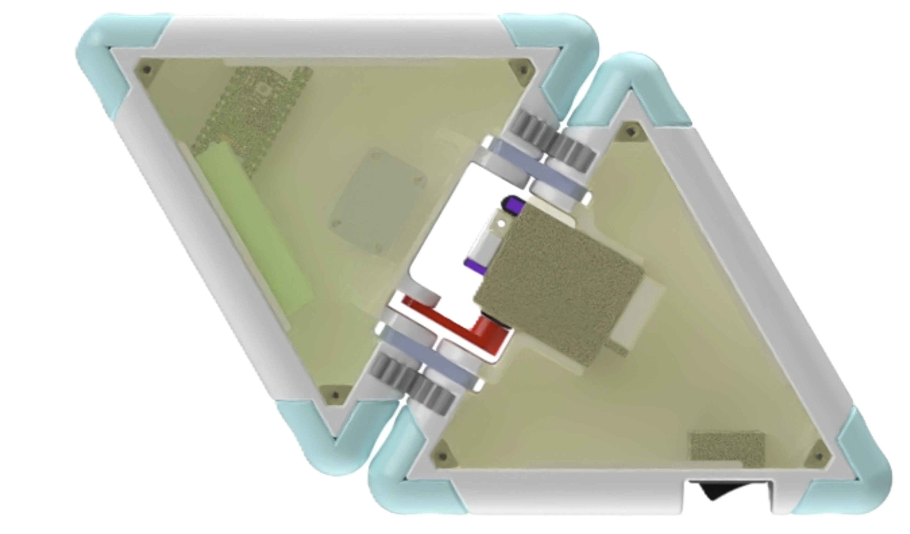
Building on the computational design, a physical prototype of the triangular module was fabricated to validate the mechanical feasibility of the actuation, magnetic coupling, and geometric configuration (Fig. 10). All key components—including the servo motor, spherical magnets, controller, and onboard electronics—were integrated within the triangular frame.
Before constructing larger structures capable of self-reproduction, we first investigated how the fabricated modules behave as dynamical units. Complex multi-body topologies are difficult to analyze analytically, and their motion patterns emerge from coupled geometric and magnetic interactions.
As shown in Fig. 11, the single module exhibits irregular and weakly directed motion, making it unsuitable as a base unit for controlled growth or division. By contrast, the 2-module system (Fig. 12) demonstrates a far clearer directional bias and repeatable locomotion pattern. This emergent stability motivated our choice of a 2-module worm-like configuration as the minimal "mother" robot for initiating the self-reproduction cycle.
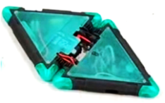
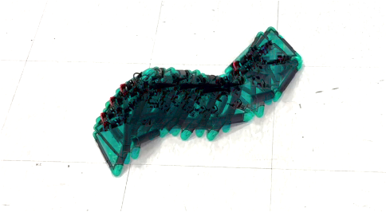
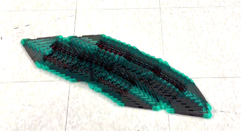
A core requirement for self-reproduction is the ability to transition between planar and spatial configurations: modules must approach in 2D for efficient docking, fold into a 3D structure for growth, and return to 2D for separation. As illustrated in Fig. 13 and Video 1, beginning with a planar configuration, the robot folds upward into a transient 3D tetrahedral geometry. From this intermediate high-energy configuration, the system then reverses the process during decoupling, eventually returning to a planar but mirrored state.
This reversible cycle demonstrates the essential morphological pathway: 2D → 3D → 2D. Such transitions form the structural basis of our reproduction mechanism: planar states enable assembly and division, while the 3D state enables volumetric growth and module rearrangement.
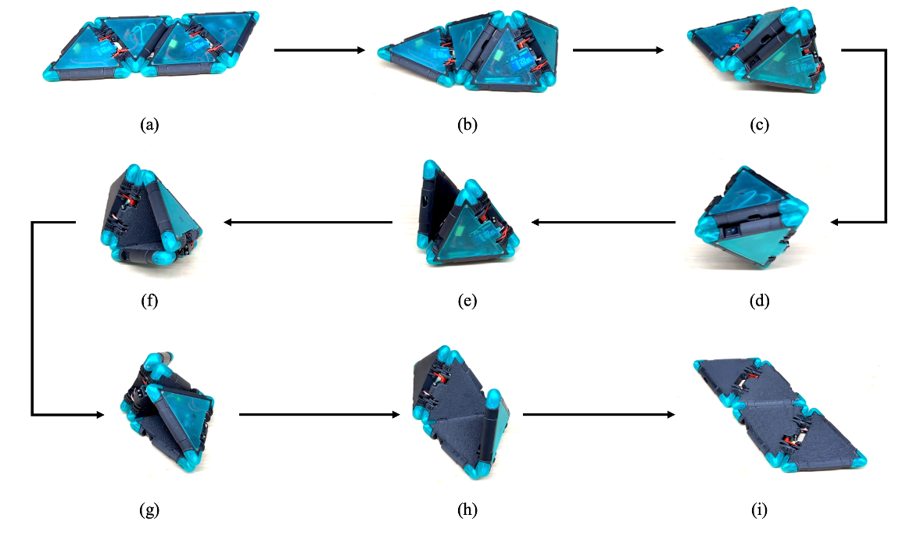
Having established that a 2-module system can reliably transition through the full 2D → 3D → 2D morphological cycle, we next integrated locomotion and modular attachment to validate physical self-reproduction. This section demonstrates that the same geometric and dynamic principles scale naturally from the 2-module "mother" robot to larger assemblies consisting of 4, 6, and 8 modules.
We first evaluated the minimal complete reproduction cycle using a 4-module system arranged as a planar worm-like chain. This configuration represents the smallest system capable of both growth and subsequent division.
As shown in Fig. 14, the 2-module mother robot sequentially absorbed two free modules from the environment to form a 4-module chain. Once assembled, the system performed the tetrahedral coupling maneuver previously characterized in the 2-module experiments. This coupling temporarily lifted the center modules into a 3D configuration, enabling the chain to reorganize and subsequently divide into two independent 2-module individuals.
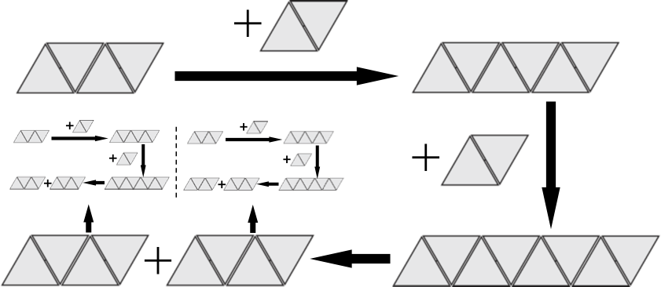
A notable feature of this process is the emergence of differentiation (Fig. 15, Video 2). Although both offspring originate from the same parent configuration, their final states may vary depending on whether each tetrahedral unit completes the decoupling action. This variability resembles divergent developmental outcomes—analogous to selective gene expression—where structurally similar units follow distinct behavioral trajectories.
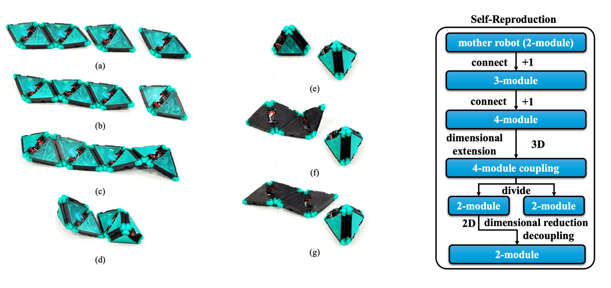
The reproduction success rate was evaluated across 15 repeated trials (Fig. 16). Among these, only 5 trials achieved complete self-reproduction, corresponding to a success rate of 33%. Within this successful subset, only 3 trials resulted in fully separated offspring, while the remaining 2 exhibited partial decoupling during the final division stage.
Several trials demonstrate "near-miss" behaviors: although these executions did not follow the intended actuation sequence or achieve full division, the resulting configurations still resembled the target morphology. These cases indicate that the system possesses multiple feasible—but suboptimal—trajectories through its morphological state space.
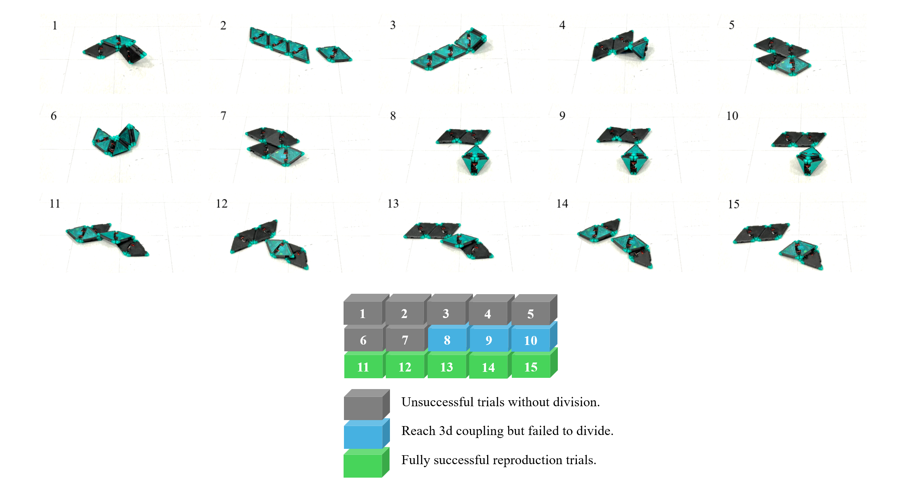
Building on the 4-module experiments, we next evaluated self-reproduction in larger 6-module and 8-module worm configurations (Fig. 17, Video 3, Video 4). Unlike the 4-module system—which required a tightly synchronized sequence of tetrahedral coupling and exhibited a comparatively high failure rate—the larger systems displayed markedly more stable and reliable behavior. The increased body length and mass provided greater inertial damping and improved contact consistency, mitigating unintended drift during locomotion and attachment.
Both systems achieved a 100% reproduction success rate, demonstrating that larger worm-like assemblies are inherently more capable of reliable self-reproduction. Increased length enhances mechanical leverage and provides a more forgiving morphological workspace, allowing the robot to exploit passive stability during division. This trend parallels observations in biological multicellular systems, where increased structural complexity often improves robustness and repeatability of reproductive processes.
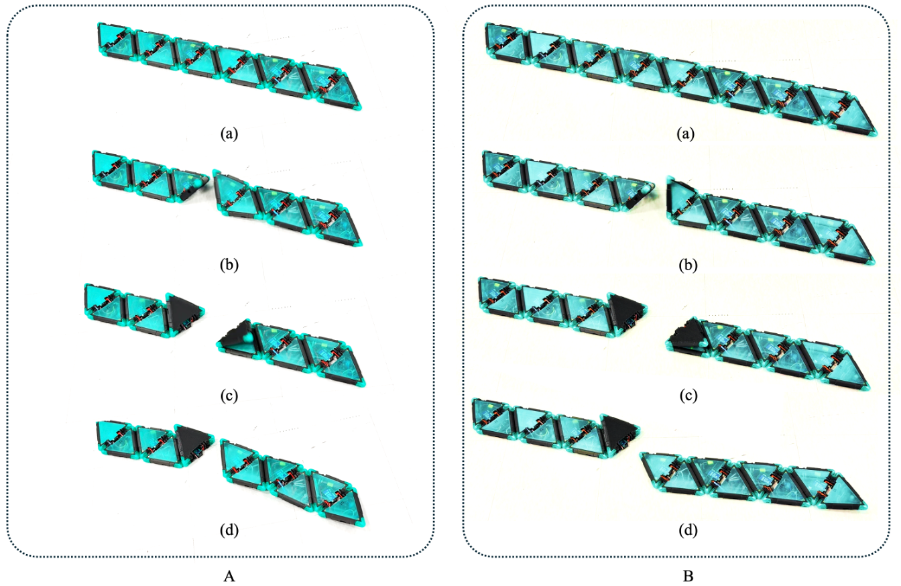
The experiments presented here demonstrate that a small set of geometric and physical principles is sufficient to instantiate embodied self-reproduction in a modular robotic system. Across configurations ranging from 2 to 8 modules, the core mechanism remains unchanged: reversible transitions between planar and spatial morphologies, magnetic attachment that supports both assembly and disassembly, and actuation patterns that exploit the passive dynamics of the worm-like chain.
A key insight emerging from these demonstrations is that structural scale profoundly influences reproducibility. Whereas the 4-module system required precise timing and exhibited sensitivity to drift and misalignment, larger chains reproduced with markedly greater stability. This trend suggests that increasing morphological complexity provides a form of physical redundancy—an effect reminiscent of multicellular organisms, where collective structure buffers variations in individual cell behavior.
The system also displays early signatures of differentiation. In the 4-module experiments, offspring sometimes diverged into distinct post-division states despite originating from identical parent configurations. Such divergence is not programmed but arises from the morphological pathways taken during division, indicating that even minimal robotic substrates may support variant-generating processes analogous to developmental variability in biological systems.
The growth–reorganization–division cycle reflects the essential logic of mitosis. Our system likewise absorbs modules, restructures via 2D–3D transformation, and physically divides—providing a mechanical analogue that justifies the term Robotic Mitosis.
Importantly, these results establish a physical basis for self-reproduction that does not rely on digital instruction, symbolic representation, or external assembly. Instead, reproduction is driven by embodied interactions among parts, dynamics, and geometry—a hallmark of biological reproduction and a critical step toward autonomous material-based evolution.
Although the system reliably reproduces in low-dimensional, low-complexity configurations, several factors constrain its scalability. Each module weighs approximately 295 g, and the magnetic joints—while adequate for planar worm morphologies—lack the strength to support multi-layer or volumetric assemblies. As additional layers are introduced, gravitational loading, hinge friction, and accumulated mass quickly exceed the capacity of the magnetic interfaces.
In addition to these mechanical constraints, the current control strategy uses simple periodic linear actuation sequences, which produce imprecise and often inefficient locomotion. These inaccuracies restrict the operational envelope: during reproduction, the mother robot must begin near the free modules to ensure attachment.
Improved Locomotion Strategies: More sophisticated actuation patterns—such as superpositions of trigonometric basis functions, optimized using trajectory search or reinforcement learning in simulation (e.g., MuJoCo)—could dramatically improve locomotion stability and precision.
Extended Morphologies: Exploring branched topologies, looped chains, or truly three-dimensional lattices could uncover new reproduction pathways, including fission-like splitting, budding, or collective morphogenesis.
Hardware Redesign: Lighter modules, stronger reversible joints, and higher-torque actuation would enable more ambitious architectures. An alternative direction is to redesign the fundamental unit: for example, a one-dimensional rod-like module capable of assembling into surfaces and then into three-dimensional bodies.
This work demonstrates that physical self-reproduction can emerge from a minimal set of geometric, mechanical, and dynamical principles. Using triangular modular units connected by magnetic joints, the system is able to grow by acquiring new modules, undergo reversible 2D–3D–2D transformations, and divide into physically detached offspring. Experiments across 2-, 4-, 6-, and 8-module configurations reveal that the same underlying mechanism scales reliably with system size, with larger assemblies exhibiting markedly greater stability and robustness.
These results establish a concrete physical pathway—grounded not in symbolic instruction or external assembly but in embodied interactions between structure, actuation, and passive dynamics—toward robotic systems capable of propagation and morphological variation.
The demonstrations presented here represent only the earliest stage of what such systems may achieve. As modules become lighter, joints stronger, and controllers more adaptive, self-reproducing robots could extend from simple worm-like chains to more complex two- and three-dimensional architectures. Integrating learning-based control may further enable robots to refine locomotion, discover new reproduction strategies, and adapt their morphology across generations. Together, these directions point toward a future in which robotic collectives not only mimic biological processes but begin to explore the principles of growth, differentiation, and evolution within physical bodies.